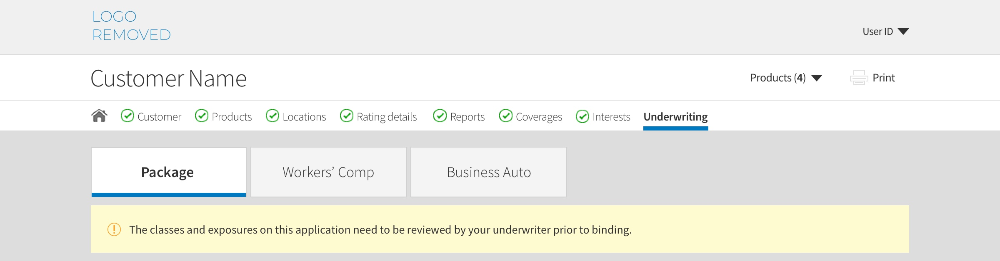
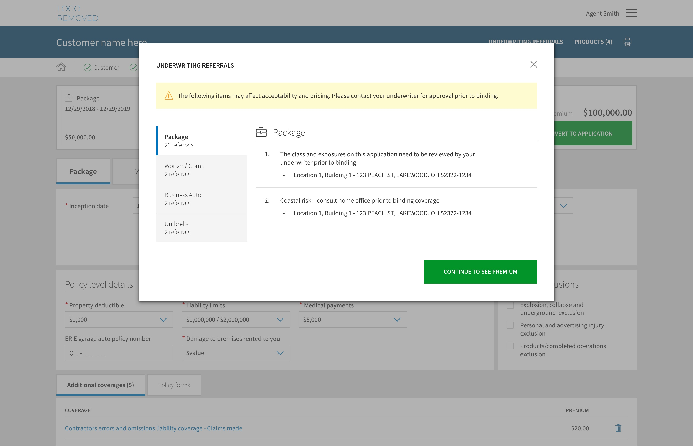
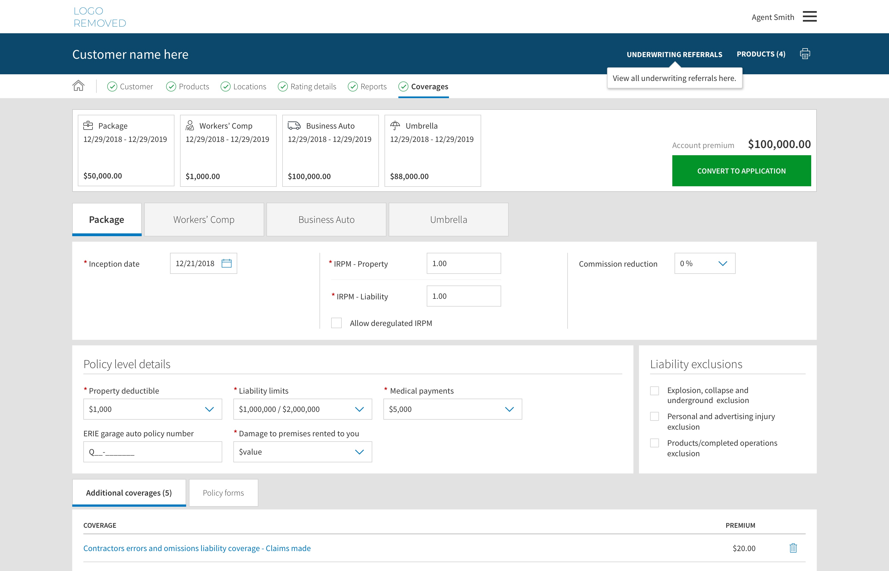
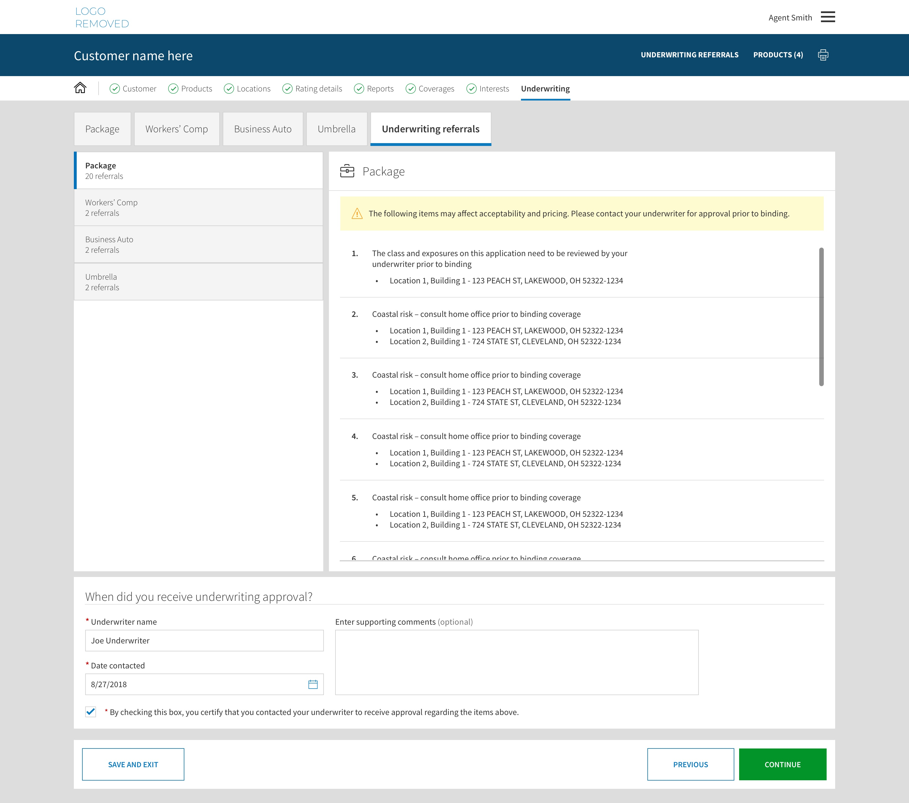

Summary
This project is currently the largest IT initiative at my company. The goal is to build an industry leading quoting and application system for our independent agent force. My role is Lead User Experience Designer. We were tasked with adding a new commercial product that combines 7 products into one, that agents can sell as a business package policy. Additionally we are enabling agents with the ability to digitally service their policies. This includes making policy changes, billing changes, and accessing claims information.
Project Goal: Enhance current quote and application system design and workflow. Add new package product that combines 7 products into one, while adding full policy servicing capabilities.
Team: 100+ team members from Product Development, Project Management, Business Analysis, Engineering, Quality Assurance, Data Analysis, Underwriting, Policy Processing, Billing, and Business sponsorship.
Role: Lead User Experience Designer
Responsibilities:
- Performing user analysis and usability testing
- Organizing, planning and delegating user experience design
- Creating conceptual designs
- Eliciting business requirements
- Delivering detailed design specifications
- Working with engineering team to implement designs
Below are a few screenshots comparing the current application with the redesigned one:
Customer
The workflow starts with collecting information about the prospective customer the agent is completing the quote for. Simple form layout helps guide the agent through the data entry.

Products
Next the agent can add multiple products to quote at the same time. I chose to make the 'Add product' buttons large tiles matching the size of the products already added, to indicate how additional products would progressively fill out the screen. A common 'Customer Account' would consist of 4 products which would evenly fill the viewport.

Locations
The primary location entered on the Customer page is pre-populated on the Locations page. Agents can then add multiple locations or buildings at a location here. The location and building count is shown at the top of the tab list for middle market policies that have a lot of locations and buildings.

Below is a description of the underwriting referral workflow in the application:
Underwriting referral workflow
One of the most complex workflows we needed to address was letting our Agents know if their quote or application needed to be referred to an Underwriter. The old process for referrals was to display a generic message to our Agents on every page of the application letting them know that some referrals existed, but not telling them what the referrals were for.
Through user-research conducted with our Agents, we found that this was a huge pain point for them, and something that other insurance companies were handling much better. Agents wanted clarity on what was causing their application to be referred to an Underwriter. The process caused both confusion and a delay in processing applications due to the need for action to be taken by an Underwriter.
Challenges
- Performance could be impacted by number of calls to referral service
- Business had concerns with Agents submitting high-risk business without approval
- Business didn't want to stop Agents from being able to submit applications
Solution
- Display referrals at 2 critical points in the workflow: At quote and submission
- Provide ability to see referrals at any time once user has completed the quote process
- Force Agents to enter which underwriter they talked to about approving risk before submission
Underwriting referrals at Quote
When the user navigates to the Coverages page for the first time, they are able to see their quote premium. If any underwriting referrals have been triggered up to this point, we display them here to let Agents know that the referrals may affect risk acceptability and pricing. This allows the Agent to be aware of potential concerns with the risk and creates transparency with the Customer about the premium amount.
Underwriting referrals popover
When the user clicks 'Continue to see premium' they will land on the Coverages page and see their quote premium. At this point, the user can now access Underwriting referrals from the header (which we indicate to them using a helpful popover). Providing referrals via this link in the header allowed us to mitigate performance concerns by only calling the referrals service when the user clicks this link.
Underwriting referrals at submission
We show refferals at the end of the workflow when the Agent completes the application and is ready to submit the policy. This is the most critical point in the workflow. Additional referrals could've been triggered during the application process, so those will be displayed to Agents, along with an area to enter the Underwriter that they spoke with and when. This last step puts the onus on the Agent to be sure he/she is writing good business. This data is stored and can be referenced by home office employees if a policy is written outside of our risk appetite.
